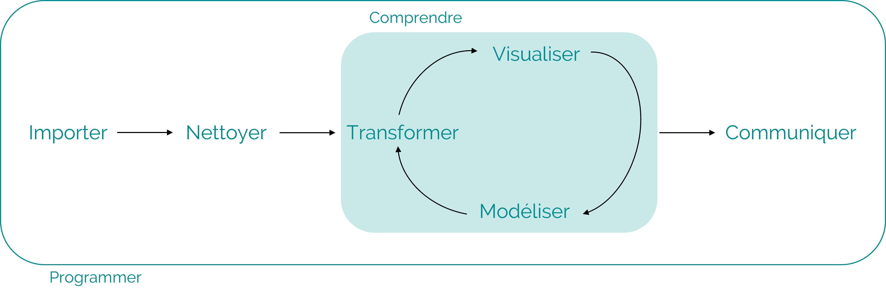
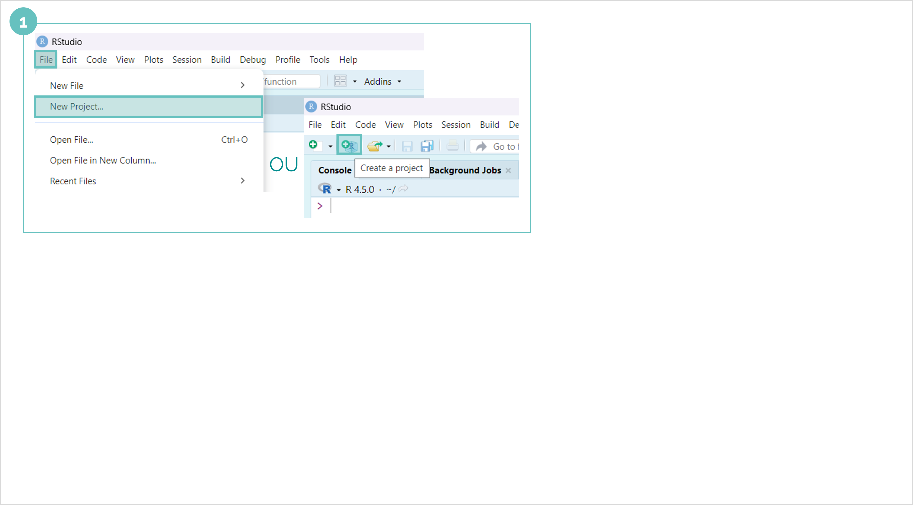
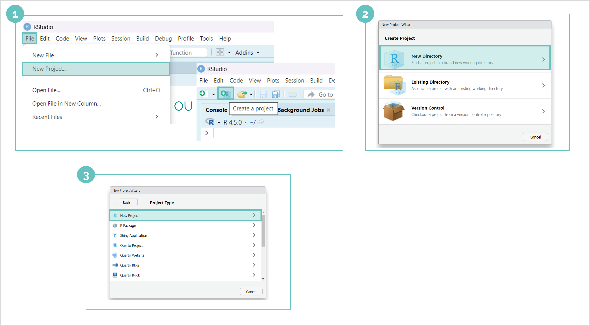
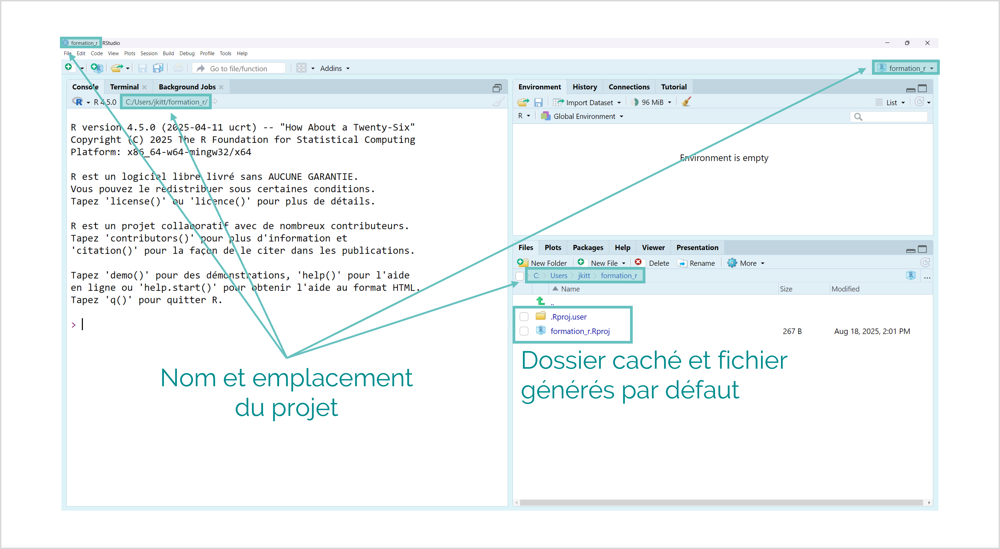
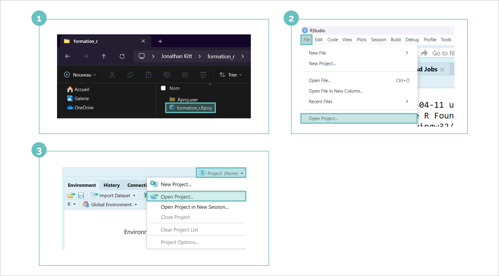
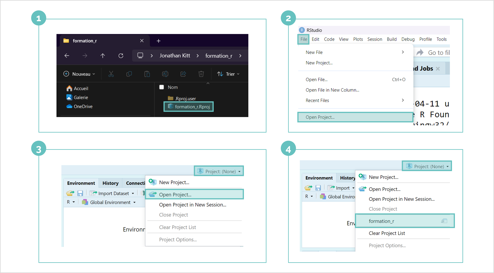

Organiser son travail
Le workflow en Data Science

Adapté du livre R for Data Science (2ed)
❓Projet
Travailler dans un projet présente plusieurs avantages :
🟢 Organisation et structure : regrouper scripts, données, résultats, figures, rapports
🟢 Gestion simplifiée du répertoire de travail
🟢 Reproductibilité
🟢 Environnement de travail isolé
🟢 Intégration avec git
🫵Créer un nouveau projet
File ▶️ New Project ▶️ New Directory ▶️ New Project
Choisir un nom de projet (ex : formation_r)
Définir l’emplacement du projet (ex : C:/Users/user)
Cliquer sur
Create Project
✅Créer un nouveau projet

✅Créer un nouveau projet

✅Créer un nouveau projet

✅Créer un nouveau projet

Nouveau projet

🫵Ouvrir un projet

🫵Ouvrir un projet

🫵Ouvrir un projet

🫵Ouvrir un projet

❓Répertoire de travail (courant)
Dossier (répertoire) dans lequel on se trouve.
(Current) working directory
Deux commandes :
getwd()pour afficher le répertoire de travail etsetwd(dir = "...")pour définir manuellement le répertoire de travailDans un projet, le répertoire de travail est situé à la racine du projet
🫵Répertoire de travail
Dans la console, taper et exécuter la commande
getwd()Dans l’onglet
Files, placez-vous à un autre endroit que le répertoire de travailRevenez dans le répertoire de travail :
⚙️More▶️Go To Working DirectoryDans l’onglet
Files, définissez le répertoire de travail :⚙️More▶️Set As Working Directory
✅Répertoire de travail

Arborescence
Utilisable pour l’ensemble des projets (la plus logique possible)
Syntaxe cohérente pour les noms de dossiers
🫵Arborescence
à l’intérieur d’un explorateur de fichiers
dans l’onglet
Files: